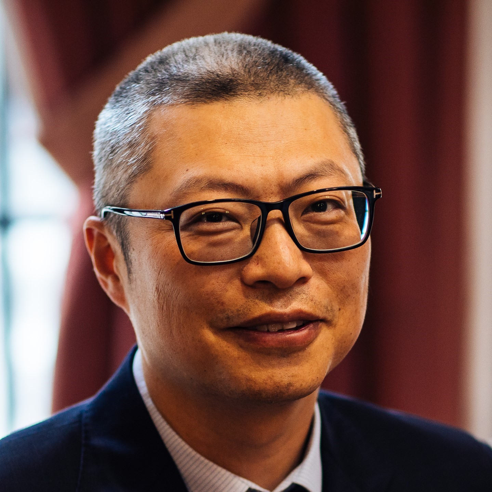
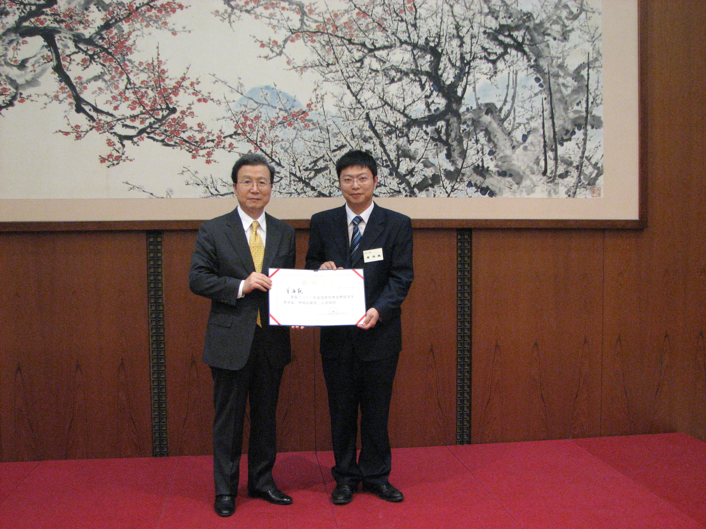
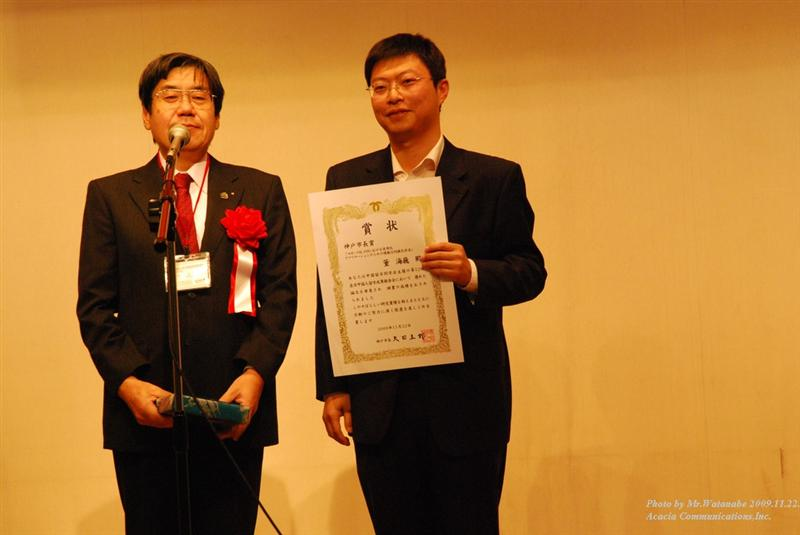
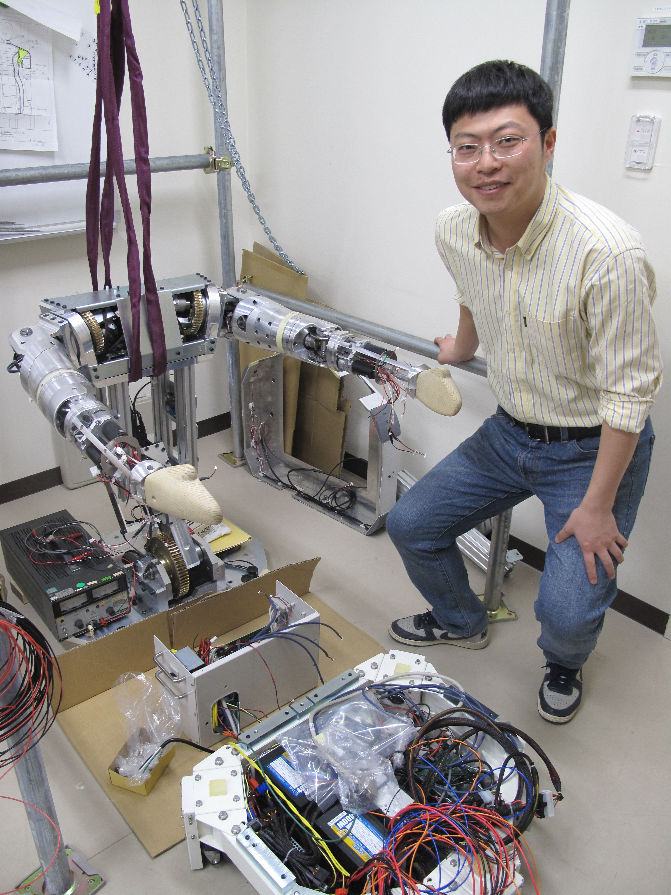
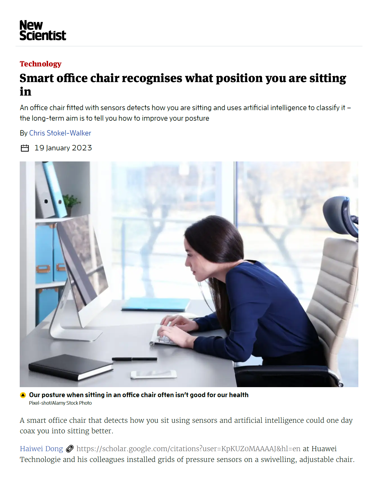
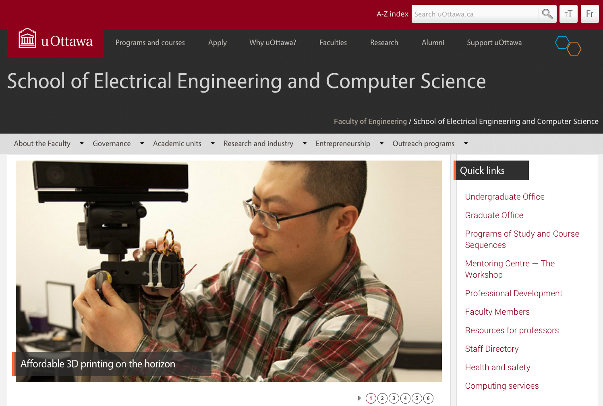
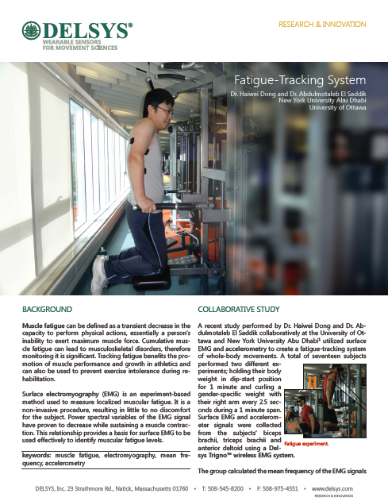

|
Computer Scientist | AI Principal Engineer | Professor | Roboticist I am an Adjunct Professor at the University of Ottawa, and a Principal Researcher and Director at Huawei Canada. Previously, I held roles as Principal Engineer at the Artificial Intelligence Competency Center at Huawei Canada, Research Scientist at the University of Ottawa, Postdoctoral Fellow at New York University, Research Associate at the University of Toronto, and Research Fellow (PD) with the Japan Society for the Promotion of Science. I received my Ph.D. degree from Kobe University in 2010 and my M.Eng. degree from Shanghai Jiao Tong University in 2008. I am a Senior Member of Institute of Electrical and Electronics Engineers (IEEE), a Senior Member of Association for Computing Machinery (ACM), and a registered Professional Engineer in Professional Engineers Ontario. Additionally, I serve as a Column Editor of IEEE Multimedia, an Associate Editor of ACM Transactions on Multimedia Computing, Communications, and Applications, and an Associate Editor of IEEE Consumer Electronics Magazine. Email • LinkedIn • CV • Short Bio • Google Scholar |
 University of Toronto Profile Email: haiwei [dot] dong [at] ieee.org |
|
I have co-authored 100 academic publications,
including 10 book chapters,
57 peer-reviewed journal and magazine articles,
and 33 conference papers,
with over 2,000 citations according to Google Scholar (h-index: 28; i10-index: 48).
My areas of expertise and research interests include artificial intelligence, multimedia, metaverse, digital twins, and robotics.
He prioritizes publishing in prestigious journals such as IEEE and ACM Transactions and in magazines.
My research projects have been frequently reported on, including in New Scientist Magazine, Kobe Newspaper and the uOttawa Gazette.
    
 
|